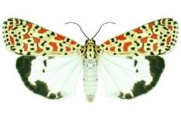

साल्ट एंड पेपर मोथSalt and Pepper Moth
Utetheisa lotrix · Erebidae · INS-0287

- Scientific name वैज्ञानिक नाम
- Utetheisa lotrix (Cramer, 1777)
- Family कुल
- Erebidae
- Hindi हिंदी
- साल्ट एंड पेपर मोथ
- Local names स्थानीय नाम
- salt and pepper moth
- Status here यहाँ की स्थिति
- native
- Movement आवागमन
- Resident, here all year
- Known from कहाँ दर्ज
- Others have published records from the wider Awadh–Purvanchal plain, none yet from Basti–Ayodhya अवध–पूर्वांचल से दूसरों के प्रकाशित अभिलेख, बस्ती–अयोध्या से अभी नहीं
- IUCN IUCN
- not evaluated
- Review समीक्षा
- not yet reviewed
When to look कब देखें
Expected mainly in May, June, July, August, September, October, November. मुख्यतः मई, जून, जुलाई, अगस्त, सितंबर, अक्टूबर, नवंबर में अपेक्षित।
Tell it apart from इनसे अलग पहचानें
साल्ट एंड पेपर मोथ / Salt and Pepper Moth
Utetheisa lotrix (Cramer, 1777) — Erebidae
साल्ट एंड पेपर मोथ — यह सफेद रंग का एक अत्यंत सुंदर और चितकबरा पतंग है जिसके अगले पंखों पर लाल और काले बिंदुओं की आकर्षक कतारें बनी होती हैं। इसके पिछले पंख पारदर्शी सफेद होते हैं जिन पर काले किनारे होते हैं। यह दिन के समय भी धूप में उड़ता है। इसकी सूंड़ी जंगली सनई (झुनझुनिया) खाती है और जहरीले तत्व अपने शरीर में जमा कर लेती है जिससे पक्षी इसे खाने से बचते हैं।
Quick Identification त्वरित पहचान
| Feature | Description |
|---|---|
| Forewings | Pure milky-white crossed by multiple transverse series of black dots and red spots |
| Hindwings | Semidiaphanous white with an irregular, sinuous black marginal band |
| Palpi | Third joint of labial palpi distinctly yellowish |
| Flight habit | Diurnal, fluttering slowly over open sunny pastures and fallow grasslands |
| Defense | Aposematic warning livery; feigns death and extrudes bitter yellow froth if handled |
Striking white tiger moth recognized by its intricate pattern of alternating black dots and scarlet spots on the forewings, semitransparent white hindwings, and daytime flight.
Field tip: Walk through sandy fallow fields overgrown with wild rattlepod weeds; watch for small white moths fluttering slowly in bright sunshine.
हिंदी: दूधिया सफेद पंखों पर लाल और काले बिंदुओं की मोतियों जैसी कतारों वाला सुंदर पतंग जो दिन में धूप में उड़ता है।
Morphology आकारिकी
Biometrics as given by Hampson (1894) (as Deiopeia pulchella):
| Measurement | Value | Source |
|---|---|---|
| Expanse | 40-46 millim. | Hampson (1894) |
The head and thorax are yellowish-white with small black spots. In lotrix, the third segment of the labial palpi is yellow. The forewings are elongate, pure milky-white, decorated with five or more interrupted transverse series of scarlet-red spots alternating with series of black dots. The hindwings are broad, semi-diaphanous white, with an irregular black marginal band broad at the apical area. The abdomen is white. Hampson (1894) records wingspan 40–46 mm (as Deiopeia pulchella).
हिंदी: इसके पंखों का फैलाव चालीस से छियालीस मिलीमीटर होता है (Hampson 1894)। अगले पंख सफेद होते हैं जिन पर लाल और काले बिंदु सजे होते हैं। पिछले पंख पारदर्शी सफेद होते हैं जिनके किनारों पर काली पट्टी होती है।
Behaviour & Ecology व्यवहार और पारिस्थितिकी
A boldly diurnal aposematic moth that does not conceal itself during daylight hours. It flies with slow, fluttering wingbeats over weed patches in open sunshine, relying on its striking "salt-and-pepper" warning coloration to advertise its chemical toxicity to birds and lizards. When disturbed or seized, it drops to the ground, feigns death, and secretes yellowish frothy fluid containing bitter pyrrolizidine alkaloids from cervical glands.
हिंदी: यह दिन में बेखौफ उड़ता है क्योंकि इसके चमकीले रंग शिकारियों को चेतावनी देते हैं कि यह जहरीला है। पकड़े जाने पर यह मरने का नाटक करता है और गर्दन से कड़वा पीला झाग निकालता है।
Life Cycle / Phenology जीवन चक्र
Breeds continuously throughout the warm months from late spring to autumn. Females lay small spherical yellow eggs in clusters on the leaves and flower buds of wild rattlepod weeds. The caterpillar is dark greyish-black with an irregular white dorsal stripe and bright orange-red lateral spots, bearing sparse black and white hairs. The larva feeds on leaves and bores into immature seed pods. Pupation occurs inside a thin silken cocoon spun in dry leaf litter.
हिंदी: मादा सनई की पत्तियों पर पीले अंडे देती है। इसकी सूंड़ी काले-भूरे रंग की होती है जिस पर सफेद धारियां और लाल धब्बे होते हैं। यह फलियों के दानों को खाकर पत्तों में प्यूपा बनती है।
Host Plants or Prey आहार
Caterpillars feed exclusively on plants in the family Fabaceae that produce pyrrolizidine alkaloids, particularly wild rattlepods (Crotalaria retusa, Crotalaria verrucosa, Crotalaria medicaginea) and wild indigo (Indigofera). Adults feed on flower nectar.
हिंदी: इसकी सूंडियां जंगली सनई (झुनझुनिया) और नील के पौधों की पत्तियों और फलियों को खाती हैं। वयस्क पतंगे फूलों का मकरंद पीते हैं।
Predators / Natural Enemies शत्रु
Because adults and larvae sequester defensive plant alkaloids, vertebrate predators such as insectivorous birds and lizards strongly avoid them after tasting them. However, caterpillars are parasitized by specialized tachinid flies and braconid wasps that are immune to the toxins.
हिंदी: जहरीले तत्वों के कारण चिड़िया और छिपकलियां इसे खाने से बचती हैं। लेकिन परजीवी मक्खियां और ततैया इसकी सूंड़ी के अंदर अंडे देकर उसे मार देते हैं।
Agricultural / Human Relevance कृषि प्रासंगिकता
Generally considered a harmless herbivore of wild weeds. Where sunn hemp (Crotalaria juncea) is cultivated for green manure or fiber, it may occasionally cause minor leaf damage, though natural biocontrol agents keep numbers low. Often observed flying alongside day-flying moths such as the Handmaiden Moth (Syntomoides imaon) across sunny weed borders. It is famous in chemical ecology as a classic example of alkaloid sequestration and aposematism.
हिंदी: यह फसलों को नुकसान नहीं पहुंचाता बल्कि जंगली खरपतवारों को नियंत्रित रखता है। सनई की खेती में कभी-कभी यह पत्तियों को खा सकता है, लेकिन यह कोई गंभीर नाशीकीट नहीं है।
Expected Locally स्थानीय रूप से अपेक्षित
Not a field record. Written from published accounts for eastern Uttar Pradesh. No confirmed local sighting yet — if you have seen it, that is what the atlas needs.
अभी तक स्थानीय पुष्टि नहीं। यह विवरण प्रकाशित स्रोतों से है, किसी अवलोकन से नहीं।
Common in sandy fallow fields, riverbed alluvium, canal banks, and sunny roadsides throughout the middle Gangetic plains. Observers in eastern Uttar Pradesh should check flowering patches of wild Crotalaria weeds during sunny afternoons for fluttering white moths.
GBIF holds published records from the wider Awadh–Purvanchal plain, none yet from Basti–Ayodhya.
A first local record for the atlas would be a clear photograph showing diagnostic features, accompanied by date, time, and precise location coordinates sent through the project's About page.
हिंदी: बस्ती और अयोध्या में परती खेतों, नदी किनारे की रेतीली जमीन और नहर की पटरियों पर यह आसानी से देखा जा सकता है। दिन में उड़ते इस सुंदर पतंगे की फोटो एटलस को भेजें।
Distribution वितरण
Global range: Widespread across the Old World tropics and subtropics, including Africa, South Asia, Southeast Asia, and Australia.
In India: Found across all states in open agricultural and grassland habitats.
In Uttar Pradesh: Distributed throughout the plains wherever rattlepod weeds flourish.
In Basti district / eastern UP: Documented across rural grassland landscapes based on published arctiine records.
हिंदी: यह अफ्रीका, भारत, दक्षिण-पूर्व एशिया और ऑस्ट्रेलिया में फैला हुआ है। उत्तर प्रदेश के सभी मैदानी जनपदों में इसका सामान्य फैलाव है।
Research Questions शोध प्रश्न
- What concentration of pyrrolizidine alkaloids is sequestered by Utetheisa lotrix larvae feeding on Crotalaria medicaginea?
- How do adult visual warning patterns differ in effectiveness against avian versus reptilian predators? / क्या इसके लाल-काले धब्बे पक्षियों को दूर रखने में पूरी तरह सक्षम हैं?
- What is the role of male corematal pheromones derived from host alkaloids during courtship in Awadh pastures?
- A schoolchild can watch a white spotted moth fly in bright sunshine and explain why birds do not eat it / क्या कोई बच्चा दिन में उड़ते इस पतंगे को देखकर समझ सकता है कि पक्षी इसे क्यों नहीं खाते?
- How does seasonal roadside herbicide application affect Crotalaria weed patches and resident moth populations?
हिंदी: क्या जंगली सनई का जहर इस पतंगे को पक्षियों से सुरक्षित रखता है? क्या बच्चे इसे दिन में उड़ते देखकर पहचान सकते हैं?
Similar Species मिलती-जुलती प्रजातियाँ
| Species | How to tell apart | हिंदी | |
|---|---|---|---|
| Bihar Hairy Caterpillar Moth \ | Spilosoma obliqua | Buff-yellow arctiine moth with red-spotted abdomen; lacks geometric red-and-black spots on white forewings | इसके पंख मटमैले पीले होते हैं और पेट पर लाल धब्बे होते हैं, सफेद पंखों पर लाल-काले बिंदु नहीं होते |
| Utetheisa pulchella | Closely related arctiine moth with black third labial palpal segment and more extensive scarlet spotting | इसके मुंह के पाल्प्स का तीसरा सिरा काला होता है और पंखों पर लाल धब्बे ज्यादा बड़े होते हैं |
Field rule: Day-flying white moth with geometric rows of black dots alternating with red spots, and semitransparent white hindwings.
हिंदी: दूधिया सफेद पंखों पर लाल और काले बिंदुओं की कतारों वाला दिन में उड़ने वाला चितकबरा पतंगा।
Taxonomy & Classification वर्गीकरण
Original description. Cramer (1777), De Uitlandsche Kapellen, vol. 2, p. 20; described under the basionym Phalaena lotrix.
Subspecies. Continental populations belong to the nominotypical subspecies Utetheisa lotrix lotrix (Cramer). Formerly treated in historical Indian literature by Hampson (1894) as Deiopeia pulchella form lotrix.
Family and order placement. Belongs to the tiger moth family Erebidae (subfamily Arctiinae, tribe Arctiini), order Lepidoptera, class Insecta.
Phylogenetic notes. Separated from Utetheisa pulchella on the basis of genitalic and palpal morphology (Jordan 1939).
IUCN status rationale. Not currently evaluated on the IUCN Red List of Threatened Species.
हिंदी: इसे 1777 में क्रेमर ने Phalaena lotrix नाम से वर्णित किया था। 1894 में हैम्पसन ने इसे Deiopeia pulchella के तहत रखा था। बाद में 1939 में जॉर्डन ने इसे स्वतंत्र प्रजाति सिद्ध किया।
Photo Gallery फोटो गैलरी
No photos yet — add field photos to media/species/salt_and_pepper_moth/ and run node scripts/sync_photos.js.
Photos needed आवश्यक फोटो
- [ ] Adult moth resting on leaf showing red and black spotted pattern (पत्ते पर बैठा पतंगा जिसके लाल-काले बिंदु दिखें)
- [ ] Moth fluttering in sunshine over wild rattlepod weed (जंगली सनई के ऊपर धूप में उड़ता पतंगा)
- [ ] Dark caterpillar feeding on Crotalaria pod (सनई की फली खाती हुई काले-लाल रंग की सूंड़ी)
References संदर्भ
- Original description: Cramer, P. (1777). De Uitlandsche Kapellen voorkomende in de drie waereld-deelen Asia, Africa en America. Vol. 2. S. J. Baalde, Amsterdam, 151 pp. (as Phalaena lotrix).
- Hampson, G. F. (1894). The Fauna of British India, Including Ceylon and Burma: Moths. Vol. 2. Taylor and Francis, London, p. 55. (as Deiopeia pulchella).
- Jordan, K. (1939). On the constancy and variability of the differences between the Old World species of Utetheisa (Lepid., Arctiidae). Novitates Zoologicae, 41, 251–291.
- GBIF Occurrence Data — Utetheisa lotrix, India (2025).
Source file: species/fauna/insects/salt_and_pepper_moth.md